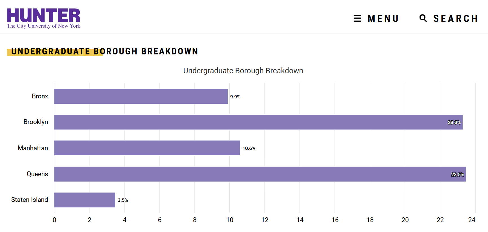
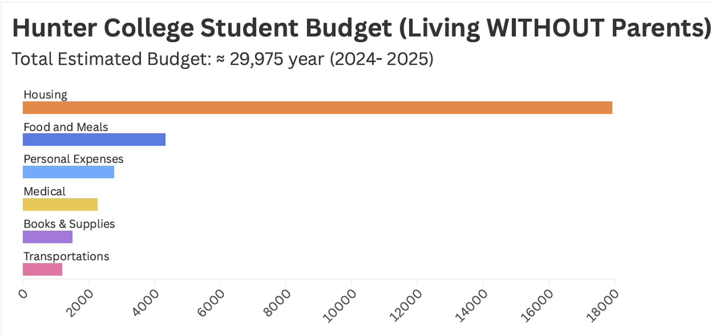
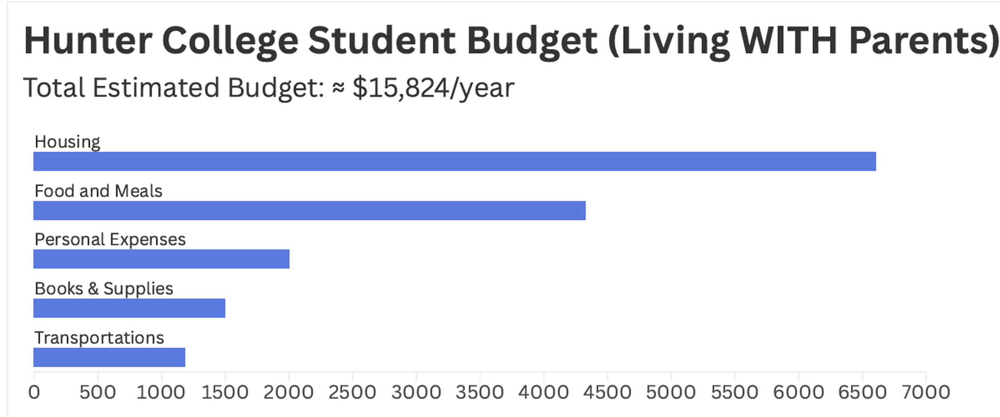
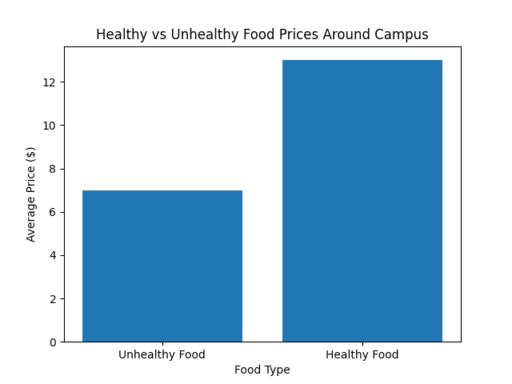
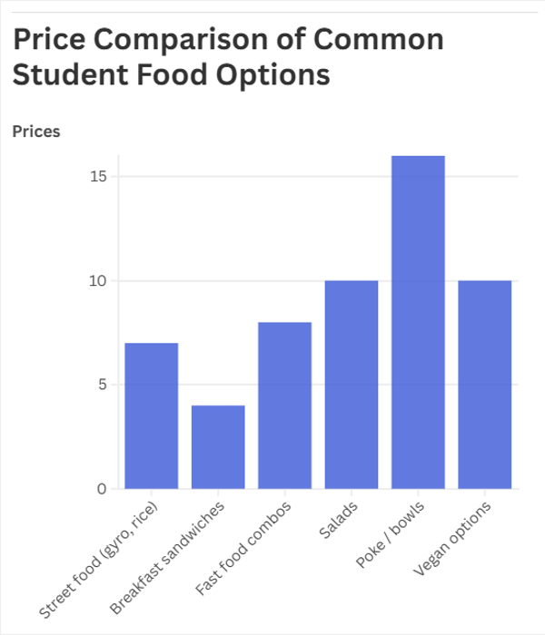

At 5 a.m., Stacy Jean’s alarm goes off and she gets ready for her two-hour commute to Hunter College. On
most days, she stays at school until 8 p.m.
Somewhere between the pull of classes, homework and exhaustion, Jean starts thinking about what to eat.
Most days, it isn’t much of a decision.
“It’s usually something fast,” Jean, 21, said. “When I’m here, I eat unhealthy food. At home, I eat better.”
For many Hunter College students, healthy eating is difficult to reconcile with long commutes, tight budgets
and busy schedules, leaving little time to prepare or plan nutritious meals daily. While nutrition experts
often advise people, particularly young adults, to eat more balanced meals with fresh ingredients, college
students must often prioritize convenience and affordability far more than health.
At 5 a.m., Stacy Jean’s alarm goes off and she gets ready for her two-hour commute to Hunter College. On
most days, she stays at school until 8 p.m.
Somewhere between the pull of classes, homework and exhaustion, Jean starts thinking about what to eat.
Most days, it isn’t much of a decision.
“It’s usually something fast,” Jean, 21, said. “When I’m here, I eat unhealthy food. At home, I eat better.”
For many Hunter College students, healthy eating is difficult to reconcile with long commutes, tight budgets
and busy schedules, leaving little time to prepare or plan nutritious meals daily. While nutrition experts
often advise people, particularly young adults, to eat more balanced meals with fresh ingredients, college
students must often prioritize convenience and affordability far more than health.
“Food access is also a basic need that directly impacts students' ability to focus and succeed academically,” Khursheed Navder, professor and acting dean, School of Health Professions said. More than 23.3 percent of Hunter students commute from Brooklyn and 23.5 percent from Queens, with many traveling from outer boroughs or even neighboring counties to attend class. With limited time between lectures and long train rides, they often skip or rush through meals. What might seem like a simple personal choice becomes a daily negotiation depending on the available time, money and access. Maria Guzman, 21, often doesn’t eat her first meal until late morning, sometimes around 11 a.m. or noon. On days when she’s rushing to campus, she stops at a nearby deli. “When I’m running late, I just grab something fast,” Guzman said. “It’s usually unhealthy, but it's what’s nearby,” she said. Both students agreed that money plays a major role in what they eat. Guzman believes that healthy food in the city is not affordable, even less so for students already managing tuition, transportation and other expenses. “Most of us are on a tight budget,” she said. Guzman and Jean said they sometimes wait until they are home to eat because food on or near campus is out of their budget. “I’ve skipped meals because I couldn’t afford something better,” Jean said. “When I’m here, I’m hungry.” Their experiences reflect a broader reality faced by commuter students in New York City, where time and access often decide food choices for them, especially those balancing long work hours, academic responsibilities, and limited financial resources on a daily basis.

While this article focuses on the main campus of Hunter College, Professor Qianhui Jera Zhang from Silberman campus shared an initiative at their premises, a Smart Pantry that provides fresh, nutritious, free food based on a quick survey that students complete, which helps address food insecurity and improve student access to meals. ”I think it is a very effective approach to supporting students, especially given the high levels of food insecurities among CUNY students,” Zhang said. This initiative is also expected to extend to the main campus, creating a potential solution for the high prices and lack of variety of food items. “Food insecurity affects a larger portion of CUNY students across the system,” Zhang said. Investigative journalism professor Eric Umansky said he has noticed students appearing tired during class.

“Students sometimes seem flagging,” he said, “especially those balancing long commutes and full schedules.” Long class days, he explained, can already make it difficult for students to maintain focus. Not eating properly can contribute to more fatigue. Combined with commuting stress with almost daily train delays and academic pressure, irregular eating habits may contribute to lower energy levels in the classroom, affecting concentration, participation, and overall academic performance for many students. “A lot of students talk about their long commutes,” Umansky said. He said commuter students in particular face challenges because there are limited places to rest, prepare more decent food or take breaks between classes inside Hunter facilities. Guzman said she tries to cook more often and include healthier options like salad or tofu, but busy days make that difficult. Dominican dishes prepared by her mom at home, she noted, can be high in sodium or grease. Still, home cooked meals often feel healthier than quick purchases near campus. How students eat affects how they feel. Nutrition experts warn that the long-term effects of poor eating habits extend far beyond temporary fatigue, potentially affecting metabolism, mental health, and long term physical well-being. Health experts also say that eating patterns formed in early adulthood often carry into later life. Guzman said she notices her energy levels improve when she eats nutritious meals. “On days I eat better, I definitely feel it.”


Students also agreed that the school could do more to support healthier and affordable food. Guzman
suggested increasing the variety of healthy options and reducing the amount of unhealthy snacks.
“There should be more variety when it comes to healthy food,” she said.
 Jean said lower food prices on campus could make healthier meals more realistic for students already
struggling with personal costs and other expenses.
“Expanding offerings such as salad stations, grain-protein bowls, healthy wraps, fresh fruit, smoothies,
and
nutritious snacks — along with providing cleaner nutritional information — can help students make more
informed and balanced choices,” Navder said.
Tuition costs are $14,630 per year for full-time students and the average rent in New York City being
$3,500, food becomes another major daily calculation, for students already balancing financial
responsibilities, limited income, and high living expenses. The choice is not always between healthy and
unhealthy, but between affordable and unaffordable, convenient and inconvenient.
For commuters like Jean, the day starts before sunrise and ends well after dark. Somewhere between the
train
and the classroom, between homework and work shifts, meals slowly become secondary survival.
In a city that never slows down, neither do the students, even if their eating habits struggle to keep
up.
Jean said lower food prices on campus could make healthier meals more realistic for students already
struggling with personal costs and other expenses.
“Expanding offerings such as salad stations, grain-protein bowls, healthy wraps, fresh fruit, smoothies,
and
nutritious snacks — along with providing cleaner nutritional information — can help students make more
informed and balanced choices,” Navder said.
Tuition costs are $14,630 per year for full-time students and the average rent in New York City being
$3,500, food becomes another major daily calculation, for students already balancing financial
responsibilities, limited income, and high living expenses. The choice is not always between healthy and
unhealthy, but between affordable and unaffordable, convenient and inconvenient.
For commuters like Jean, the day starts before sunrise and ends well after dark. Somewhere between the
train
and the classroom, between homework and work shifts, meals slowly become secondary survival.
In a city that never slows down, neither do the students, even if their eating habits struggle to keep
up.